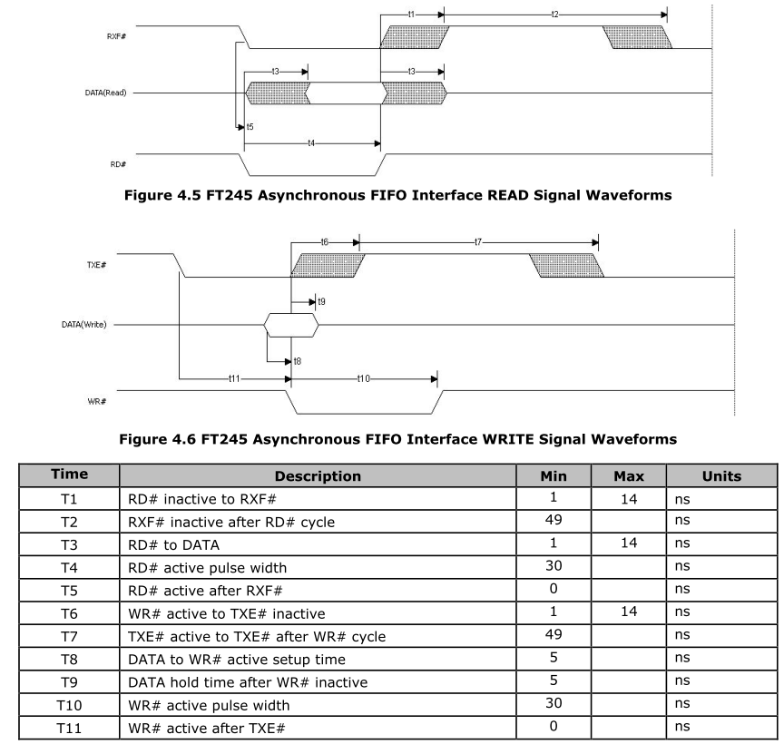
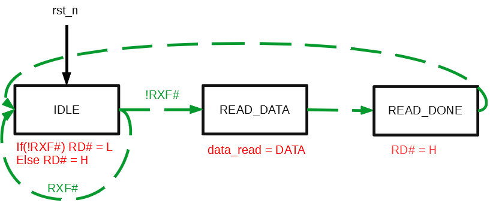
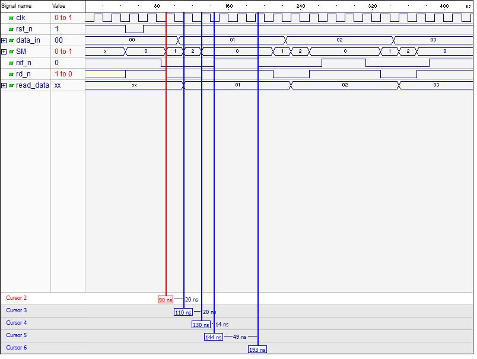
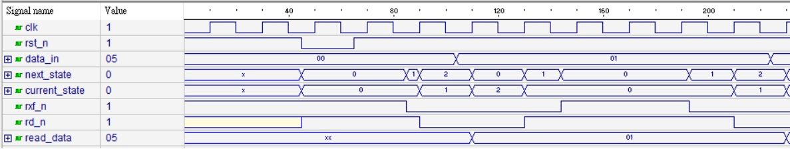

有寫過C/C++、python這類語言的人應該都了解，程式在執行時是由上往下一行一行執行，先後的順序是一目了然。
但是像verilog這種硬體語言，基本上每一段程式都是一個IC，而每一個IC都是獨立在平行運作的。如
果某個訊號的產生是要依賴其他訊號的順序，一開始寫的時候頭腦常常會打結，需要一段從序列式語言跳到並行式語言的轉換期。
當在寫verilog時如果要處理到有順序關係的訊號時，一個比較有系統性的方法是使用State Machine，中文稱為狀態機，來處理。
State machine 的概念就是:
- 把一個複雜的流程切成好幾個不同的狀態，然後這些狀態是發生在不同的時間點而不會同時發生。
- 在每一個狀態時都有專屬每一個狀態該做的事情。
- 每一個狀態都有其演變到下一個狀態時的條件。
舉個例子，當我想要煮水餃時，我會把它分成三種狀態: [下水餃]、[第一次水滾]、[第二次水滾]。
當在[下水餃]狀態時，我要做的事情就是把水餃丟到水裡。
當在[第一次水滾]狀態時，我要做的事情就是加一碗冷水。
當在[第二次水滾]狀態時，我要做的事情就是把水餃撈起來。
當狀態處在[下水餃]時，若看到水滾了則狀態變成[第一次水滾]。
當狀態處在[第一次水滾]時，若看到水滾了則狀態變成[第二次水滾]。
若用圖表來表示:

藉由把流程做狀態切割，再定義好狀態演變的條件以及各個狀態時的輸出情況，就能將複雜的系統化繁為簡，有條不紊的運作。
其實這個方法不只在寫程式時是這樣做，在處理很多生活上或工作上的事情時也都會這樣做，事前先規劃好事後就按表操課就好。
接著來看實務上會遇到的例子: FT232H 非同步FIFO MODE 讀/寫
下圖是spec裡擷取下來在讀跟寫時的時序:

接下來以讀取為例:
RXF# 跟 DATA 為輸入訊號來自FT232H， RD#為輸出訊號必須由我們吐出。
由時序圖可以知道，當看到RXF#為LOW時”至少”等待t5(0ns)後把RD#設LOW，接著”最多”等待t3(14ns)後DATA會準備好供讀取。
我們將RD#設為LOW的時間”至少”要維持t4(30ns)，當RD#回復HIGH後”最多”過了t1(14ns)後RXF#會變回HIGH，之後”至少”要過了t2(49ns)後才可以再讀一次。
這裡提到至少與最多的時間是由時序圖下表格得到的，永遠考慮的是最糟的情況(the worst case)。
再來需要注意的是在實務上所謂的時間都是以clock週期的倍數來計算的，假設FPGA吃的是50MHz
的clock，也就是20ns的週期，這代表的是時間最小的解析度就是20ns，所有要延遲的時間都必須是
20ns的倍數，因此我的state machine可以規劃如下:
| State Machine | 該做的事 | 狀態轉換 |
|---|---|---|
| IDLE | RXF#為L時RD#設為L否則為H | RXF#為L時變為READ_DATA |
| READ_DATA | 把DATA讀進來 | 變化為READ_DONE |
| READ_DONE | RD#設為H | 變化為IDLE |
以圖來表示:

然後根據這些狀態圖，就可以開始來寫code了!
#寫法一
1 |
|
寫法一模擬圖:

這種寫法我自己是稱為一個always block幹到底寫法，整個程式看起來就像是C code的感覺由上到下，不容易搞混。
對於在這種state machine只有幾個的簡單流程我也常這樣寫，但是當流程變得很複雜後這樣寫起來就會變得超長，反而會混亂。
此時我就會改成另一種使用三個always block的寫法，先來看剛剛的code改成新寫法會長什麼樣子:
1 | module ft232h_asynFIFO_2_r |
寫法二模擬圖:

這種寫法的差別就是在於把原本一段式的state machine拆成目前狀態(current state)與未來狀態(next state)，
在不同的current state有對應其current state該做的事。而當促使狀態發生變化的訊號產生時，之前我們是直接讓current state變化，
但現在我們是讓next state去產生變化，current state不直接變化。 最後，我們再讓current state跟next state連接起來就完成了。
這種寫法在剛接觸時會覺得很複雜不知道在寫什麼，可是習慣後就會覺得很容易看，程式碼維護起來很方便。
它最大的好處就是把next state logic也分離出來跟output logic(就是我所謂的該做的事)一樣，你只
要針對current state跟會造成它變化的訊號來寫他的輸出就好。
至於state machine的分類請參考下面這個blog:
https://www.cnblogs.com/oomusou/archive/2011/06/05/fsm_coding_style.html
在實際上我會視情況來混搭而不會限制自己說一定要用哪一個模型，
然後跑模擬修正自己的state machine直到模擬波形如自己所要的，
最後上晶片跑時如果有問題再用邏輯分析儀做修正就OK了。